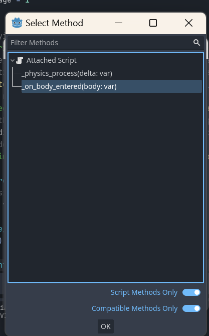
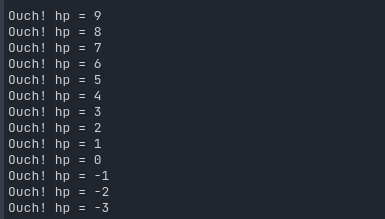
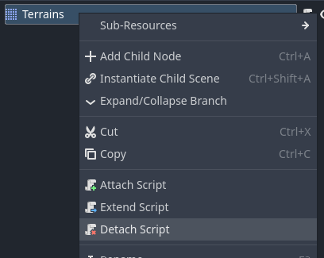
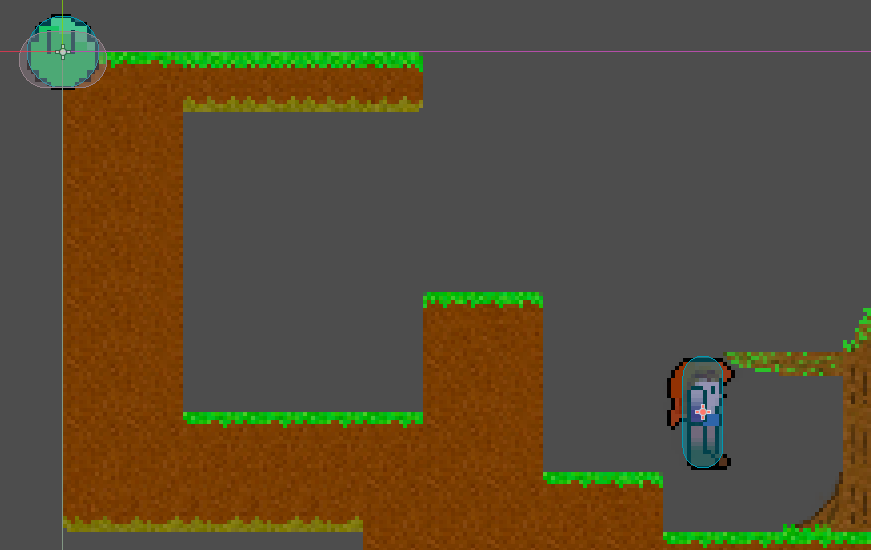
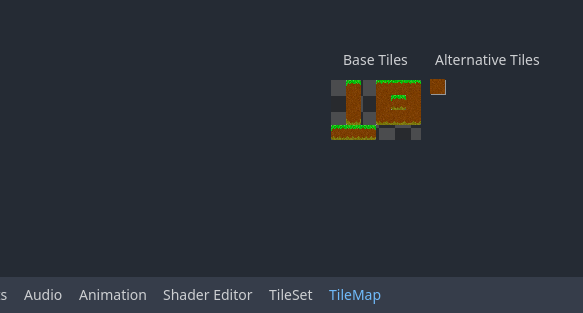
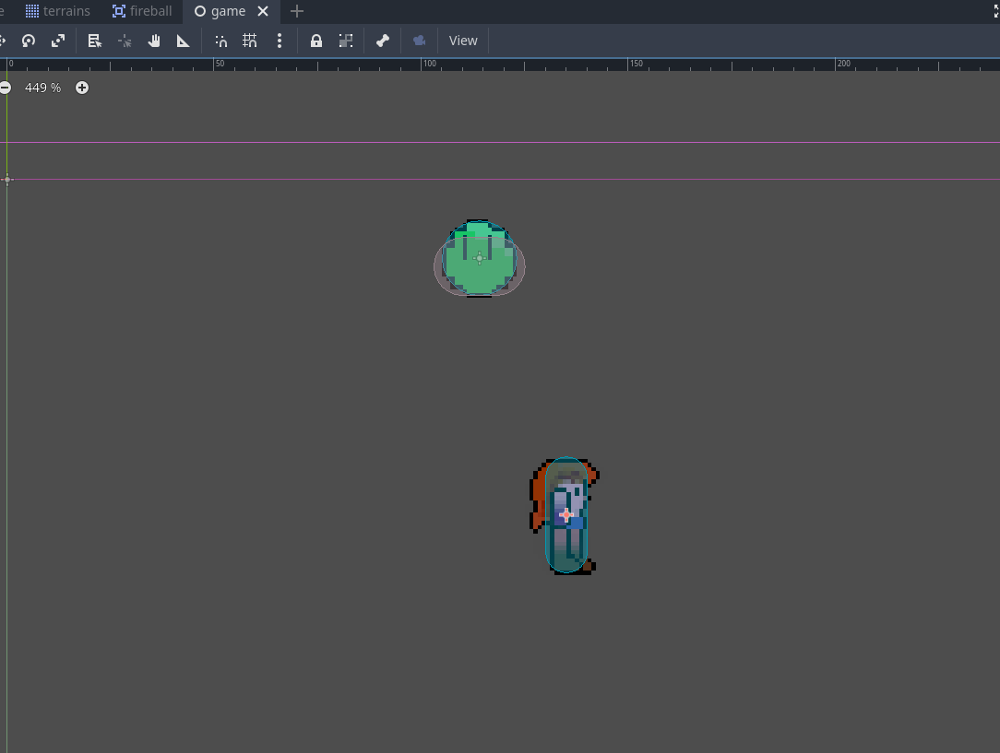
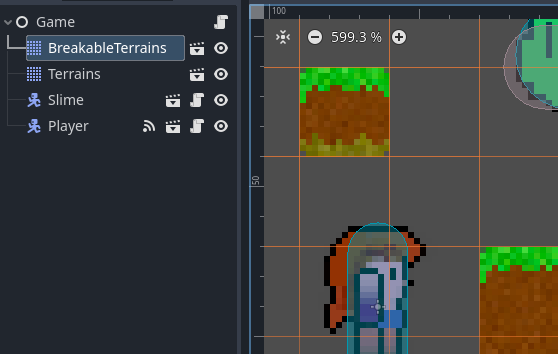
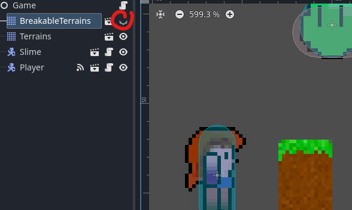

Day 5 - Slimes, Breaking tiles, Falling Tiles, Scenery Tiles and Shaders
A long title for a long episode!
What we'll do today
- Make a bouncing Slime monster
- Add the tree-trunk terrain
- Make tiles Zelia can break
- Allow those breakable tiles to fall down
- Technical Debt 6
- Reuse tiles as background scenery
Make a bouncing Slime monster
Every game needs one.
Setting up the slime scene
- Download the zip: assets/green-slime.zip
- Create the resource dirs
res://monsters/slime/green - Extract the .png files in that
res://monsters/slime/greendir - Create a new
CharacterBody2D-scene - Rename it to
Slime - And save it into
res://monsters/slime/slime.tscn - Give slime a child node
AnimatedSprite2D - Navigate to its
Inspector Sprite Frames > SpriteFrame > Animations - Change
defaultintoairborne, addslime/green/5.pngto it - Add
floor_bounceand add1.png-4.pngto that -> in that order - Set
floor_bounceto7 fpsfor the nicest effect:

Add 2 collision shapes
Because our slime looks a little different depending on what state it's in, let's give it 2 collision shapes:
- Add a child
CollisionShape2D-node toScene > Slime - Name it:
AirborneCollisionShape - Pick
CircleShape2DunderInspector > Shape - Align it nicely around the
airborneanimation sprite:

Next:
1. Add another child CollisionShape2D-node to Scene > Slime
2. Name it: FloorBounceCollisionShape
3. Pick CapsuleShape2D under Inspector > Shape
4. Align it around the first floor_bounce animation sprite:

Setting up the slime.gd script
Add the slime to the main scene:
- Open
res://world.tscn - Drag at least one slime scene
res://monsters/slimes/slime.tscninto theWorld-scene - Test the main scene
WorldwithF5and observe that the slime hangs there doing nothing:

- Open the
res://monsters/slimes/slime.tscnscene - Attach a script to it, picking the default values in the dialog
- You might notice a lot of suggested code for a
CharacterBody2D- although it could be fun to try it out, it's not what we're looking for. - Remove all code and replace the
_physics_processfunction body withpass:
extends CharacterBody2D
func _physics_process(delta):
pass
Adding the MovementStates
We have 2 animations currently, so let's create 2 movement states to match:
extends CharacterBody2D
enum MovementState { AIRBORNE, FLOOR_BOUNCE }
var movement_state : int
func _ready():
# assume it starts out hanging in the air
movement_state = MovementState.AIRBORNE
# start up the correct animated sprite sprite frames for that state
$AnimatedSprite2D.animation = "airborne"
$AnimatedSprite2D.play()
We also know the slime must bounce around. We can use some familiar stuff for that:
# We want the level designer to be able to modify stuff like this.
@export var JUMP_VELOCITY = -400.0
var gravity = ProjectSettings.get_setting("physics/2d/default_gravity")
Now let's at the very least allow some move_and_slide() in the _physics_process, applying the gravity:
func _physics_process(delta):
velocity.y += gravity * delta
move_and_slide()
Now test again ith F5 - the slime falls down and lands on the tiles.
Picking the right collision shape
As we saw when we were setting up the scene, the slime has 2 CollisionShapes2Ds attached of which only one should be active at a time, base on its movement_state.
Create a func pick_collision_shape_for_movement_state:
# enable the collision shape that matches the current movement state
func pick_collision_shape_for_movement_state():
match (movement_state):
MovementState.AIRBORNE:
$AirborneCollisionShape.disabled = false
$FloorBounceCollisionShape.disabled = true
MovementState.FLOOR_BOUNCE:
$AirborneCollisionShape.disabled = true
$FloorBounceCollisionShape.disabled = false
And make sure to invoke it once the slime is instantiated:
func _ready():
# assume it starts out hanging in the air
movement_state = MovementState.AIRBORNE
# enable the collision shape that matches the movement state
pick_collision_shape_for_movement_state()
Setting the right movement state in the _physics_process
When we programmed the player (hacked it together the 1st time) we had to do a lot of refactor work early on to make the player.gd code more understandable and maintainable.
The most important step we took was to separate out two stages in the _physics_process to determine what the player should do in this iteration (this time around in the infinite loop):
1. set_movement_state()
2. handle_movement_state()
Even though it felt artificial to force such a hard separation in 2 functions, it made some code that is easier for a human (like us, I hope) to reason about.
Let's reapply it here, so first create the 2 new empty functions set_movement_state and handle_movement_state and invoke them from _physics_process, right after the gravity is applied:
func _physics_process(delta):
# Apply gravity
velocity.y += gravity * delta
# Set, and handle movement state
set_movement_state()
handle_movement_state()
move_and_slide()
Programming the full slime behaviour in steps
Now we will reason our way to a working, bouncing slime. Coding it in small steps:
- Make the slime bounce up and down
- Make the slime bounce in the direction of the player
- Make the slime take damage from fireballs
- Allow the slime to die from damage
- Make the slime hurt the player by bouncing into the player
Make the slime bounce up and down
Let's start out by making it land nicely. So we set the correct movement state and animated sprite when the slime is on the floor:
func set_movement_state():
if is_on_floor():
movement_state = MovementState.FLOOR_BOUNCE
pick_collision_shape_for_movement_state()
$AnimatedSprite2D.animation = "floor_bounce"
Test using F5.
The next step is to make it bounce up again round about when the "floor_bounce" animation finishes. We'll need a one-shot timer for that and we need to start it at the right moment:
- Go to
Scene > Slimeand add a child nodeTimer - Rename it to
FloorBounceTimer - Make sure
One Shotis check toOnunderInspector - Set its
Wait Timeto0.571s
"Why 0.571s," you say? Well, it's 7fps times 4 animation frames:
1 / 7 * 4.
- Go to
Node > Timerand double-clicktimeout() - Keep the defaults and attach it to the
Slime's script - So this is the moment we want the slime to jump up again, let's write:
func start_jump():
velocity.y = JUMP_VELOCITY
func _on_floor_bounce_timer_timeout():
start_jump()
- We also need to start the timer when we know the slime has landed:
func set_movement_state():
if is_on_floor():
# place this new code _before_ changing the movement_state!
# so only start the timer at the moment of _landing_
if movement_state == MovementState.AIRBORNE:
$FloorBounceTimer.start()
movement_state = MovementState.FLOOR_BOUNCE
pick_collision_shape_for_movement_state()
$AnimatedSprite2D.animation = "floor_bounce"
Test with F5: it only flies up once and it looks off.
We're still missing something! We need to set the correct movement state, animation and collision shape for when is_on_floor() is false:
func set_movement_state():
if is_on_floor():
# ... leave the same ...
else:
movement_state = MovementState.AIRBORNE
pick_collision_shape_for_movement_state()
$AnimatedSprite2D.animation = "airborne"
Test with F5: that looks a lot better

Refactor early.
The code is cluttering up already. Also, we have not made use of our somewhat artificial separation between set_movement_state and handle_movement_state yet.
That separation was supposed to make the code easier to reason about, So now apply the following early 'incisions' >:)
Move the code that is more about handling the current movement_state to the function handle_movement_state:
func handle_movement_state():
pick_collision_shape_for_movement_state()
# pick the animation sprite for the current movement state
match(movement_state):
MovementState.FLOOR_BOUNCE:
$AnimatedSprite2D.animation = "floor_bounce"
MovementState.AIRBORNE:
$AnimatedSprite2D.animation = "airborne"
Now you can remove a lot of code from set_movement_state, leaving only the stuff that is more about setting a new movement_state:
func set_movement_state():
if is_on_floor():
if movement_state == MovementState.AIRBORNE:
$FloorBounceTimer.start()
movement_state = MovementState.FLOOR_BOUNCE
else:
movement_state = MovementState.AIRBORNE
We still have a match-block that needs a comment to explain what it does.
Let's fix that by creating a function for it:
func pick_sprite_for_movement_state():
match(movement_state):
MovementState.FLOOR_BOUNCE:
$AnimatedSprite2D.animation = "floor_bounce"
MovementState.AIRBORNE:
$AnimatedSprite2D.animation = "airborne"
And invoke it from handle_movement_state like so:
func handle_movement_state():
pick_collision_shape_for_movement_state()
pick_sprite_for_movement_state()
Did you notice we applied the lesson we learned on day 3 about refactoring big functions?
Make the slime bounce in the direction of the player
So, now that the slimes are bouncing up and down nicely, we need to make them aware of where their only enemy is: you, the player.
So we already learned a surefire approach through using singletons (or Autoload) on day 4. Let's apply that again:
- Go to
Project > Project Settings... > Autoload - Fill in
PlayerStateunderNode Nameand clickAdd - In the dialog keep the defaults and create the new file
- Open
res://player_state.gd - Add a
var positionof typeVector2 - When
_readyinitialize it withVector2.ZERO:
extends Node
var position : Vector2
func _ready():
position = Vector2.ZERO
Updating PlayerState.position
Now this new PlayerState singleton must be updated at least every time the player moves. Do this by adding this one line to a suitable function in player.gd:
func _process(_delta)
PlayerState.position = position
Using PlayerState.position in slime.gd
Now the slime can't fly, so the only property we need to update in slime.gd is the x-position.
The effect we want to achieve is that the slime only moves on the x-axis when airborne. That makes sense because slimes are sticky and do not slide around while stuck to the floor.
So the moment that we want to decide its velocity.x is when its jump starts and the moment that we want to stop x movement is when it lands. Go script it:
@export var X_VELOCITY = 100
func start_jump():
velocity.y = JUMP_VELOCITY
if PlayerState.position.x < position.x:
velocity.x = -X_VELOCITY
else:
velocity.x = X_VELOCITY
func set_movement_state():
if is_on_floor():
if movement_state == MovementState.AIRBORNE:
# new line:
velocity.x = 0
$FloorBounceTimer.start()
movement_state = MovementState.FLOOR_BOUNCE
else:
movement_state = MovementState.AIRBORNE
Now press F5 and test:

The first jump looks great, but the second jump already has an issue.
So apparently, when the slime hits a wall, the velocity.x is set to zero by move_and_slide()... Sounds like it makes perfect sense.
But we want it to fly left to reach te player, so we're going to fight this resistance! :D. We'll pick our battle with physics right here:
func handle_movement_state():
# keep trying to reach the player, even when bumping against the wall
if is_on_wall():
if PlayerState.position.x < position.x:
velocity.x = -X_VELOCITY
else:
velocity.x = X_VELOCITY
pick_collision_shape_for_movement_state()
pick_sprite_for_movement_state()
Refactor early part 2
So I'm often a lone programmer, which is bad. One rule of thumb I learned concerning the DRY (Don't Repeat Yourself) principle I learned - when I did work in a team - is: if you see the same snippet of code duplicated 3 times, refactor.
Well, I'm annoyed seeing it just 2 times right now, so let's fix it early:
func follow_player():
if PlayerState.position.x < position.x:
velocity.x = -X_VELOCITY
else:
velocity.x = X_VELOCITY
Invoke it in handle_movement_state and start_jump.. Now your code is DRY again.
Make the slime take damage from fireballs
When a fireball hits a slime we can detect it, but which of the two should detect the collision?
Turns out we'll be handling this one, reasoning from the fireball. Which makes sense. The fireball will know how much punch it packs and it will deal it to anything that can take_damage(...).
So the first thing we will do is implement that method for the slime:
@export var hp = 10
func take_damage(dmg: int):
hp -= dmg
# test if it works
print("Ouch! hp = " + str(hp))
Now add the collision detection to the fireball like this:
1. Open res://projectiles/fireball/fireball.tscn
2. Select Scene > Fireball
3. Go to Node next to the Inspector tab
4. Double click Signals > Area2D > area_entered(...)
5. And connect it to the existing Fireball method _on_body_entered
NOTE! that this is the first time I'm not saying "pick the defaults in the dialog"
So first use pick:
 And then choose the
And then choose the _on_body_entered method:

- Adapt
func _on_body_enteredlike so:
@export var damage = 1
func _on_body_entered(body):
# if the body _can_ take damage, give it _my_damage
if body.has_method("take_damage"):
body.take_damage(damage)
# ... leave the rest ...
So the var named body can be a slime and a slime will have the method take_damage. If it does, we invoke it! If not, it's not 'damageable'.
Programmer's rant
We call this duck-typing:
"If it looks like a duck and quacks like a duck...": if the target has a quack() method, we assume proactively it's a duck.
In typed languages you need to declare an interface which tells the compiler (or interpreter) what methods the class implements. For a loosely typed scripting language like gdscript duck-typing makes more sense -- although inevitably you run into the request for type hints, like python did... anyway... whatever... you just want to make cool games, right?
...and if they crash, just ask a programmer!
/Programmer's rant
Test with F5!
All sorts of stuff is not working as expected!
So let's tackle both issues in reverse order :)
Issue #2: Slimes are not in the correct collission layer/mask
We forgot the collision layer and collision mask:
- Open
res://monsters/slime/slime.tscn - Go to
Inspector > Collision - Add the number 2 to the collision mask and -layer:

That should fix it. The fireball should now dissipate upon hitting the slime and the slime should report its damage to the log:

Fireballs collide into eachother now .. and dissipate
So that mystery was solved quite quickly. Let's make sure that fireballs do not beat eachother anymore by deselecting collision layer 2:
- Open
res://projectiles/fireball/fireball.tscn - Go to
Inspector > Collision - Deselect
Layer > 2:

That should fix it:
Allow the slime to die from damage
The next step is not to allow that strange bit of negative hp!
All it takes is doing stuff we already did with the fireball: autoloaded texture renditions
- Open
res://texture_renditions.gd - Add the properties
slimeandslime_dissipate
var slime = preload("res://monsters/slime/green/5.png").get_image()
var slime_dissipate : Array = []
- And use
get_dissipate_renditionsto generate renditions for slime-death
func _ready():
slime_dissipate = get_dissipate_renditions(slime, 10, 2, 0.9)
fireball_dissipate = get_dissipate_renditions(fireball, 15, 1, 0.5)
Add a MovementState and animation for slime death
Next open the slime script to add the renditions.
- Open
res://projectiles/fireball/fireball.gd - Copy the rendition load code to your paste-buffer (
Ctrl + C)
# The sprite_frames of $AnimatedSprite2D is a singleton, so after calling
# add_animation one time, it exists for all other instances
if "dissipate" not in $AnimatedSprite2D.sprite_frames.get_animation_names():
# Add a new animation to the SpriteFrames instance of the $AnimatedSprite2D node
$AnimatedSprite2D.sprite_frames.add_animation("dissipate")
# Loop through all rendition images in the global singleton fireball_dissipate
for rendition in TextureRenditions.fireball_dissipate:
# Add them as a frame to
$AnimatedSprite2D.sprite_frames.add_frame("dissipate", rendition)
- Now open
res://monsters/slime/slime.gd - And paste the copied code into the
_ready()function, adjusting one bit:.fireball_dissipatebecomes.slime_dissipate
if "dissipate" not in $AnimatedSprite2D.sprite_frames.get_animation_names():
# Add a new animation to the SpriteFrames instance of the $AnimatedSprite2D node
$AnimatedSprite2D.sprite_frames.add_animation("dissipate")
# Loop through all rendition images in the global singleton
for rendition in TextureRenditions.slime_dissipate:
# Add them as a frame to
$AnimatedSprite2D.sprite_frames.add_frame("dissipate", rendition)
- When the slime's
hpis<= 0then it should die - Add the
MovementState.DYINGto the enum:
enum MovementState { AIRBORNE, FLOOR_BOUNCE, DYING }
- So when the slime takes damage and drops below zero, set it:
func take_damage(dmg: int):
hp -= dmg
if hp <= 0:
movement_state = MovementState.DYING
- Make sure it is not reset in
set_movement_state()and disable collisions:
func set_movement_state():
if movement_state == MovementState.DYING:
# FIXME: move to pick_collision_shape_for_movement_state
$AirborneCollisionShape.disabled = true
$FloorBounceCollisionShape.disabled = true
elif is_on_floor():
if movement_state == MovementState.AIRBORNE:
velocity.x = 0
$FloorBounceTimer.start()
movement_state = MovementState.FLOOR_BOUNCE
else:
movement_state = MovementState.AIRBORNE
- And handle it in the
movement_statehandler:
func handle_movement_state():
if movement_state == MovementState.DYING:
velocity = Vector2(0, 0)
# the rest was there already (behind 'el')
elif is_on_wall():
follow_player()
pick_collision_shape_for_movement_state()
pick_sprite_for_movement_state()
- And make sure the correct animation for dying is picked:
func pick_sprite_for_movement_state():
match(movement_state):
MovementState.FLOOR_BOUNCE:
$AnimatedSprite2D.animation = "floor_bounce"
MovementState.AIRBORNE:
$AnimatedSprite2D.animation = "airborne"
MovementState.DYING:
$AnimatedSprite2D.animation = "dissipate"
The dissipate timer
- Now let's add a
DissipateTimerto theSlimescene - Open
res://monsters/slime/slime.tscn - Go to
Scene > Slimeand add a child nodeTimer - And rename it to
DissipateTimer - Make sure it is set to
One ShotunderInspector, leaveWait Timeto1s - Connect its
timeout()-signal toslime.gdin the usual way (defaults in dialog and such) - Implement as follows:
func _on_dissipate_timer_timeout():
queue_free()
- And of course let's not forget to fire the timer when the slime has no hp left:
func take_damage(dmg: int):
hp -= dmg
if hp <= 0:
movement_state = MovementState.DYING
$DissipateTimer.start()
Test again and make sure the slime does stay dead...
Make the slime hurt the player by bouncing into the player
Being a CharacterBody2D, same as the Player is, the Slime does not have the body_entered, nor does it have area_entered out of the box.
It is probably easier to just code collisions with the player more traditionally: in its movement handler using its get_slide_collision_* methods like documented in
Detecting collisions:
- Open
slime.gd - Add a default damage as public property:
@export var damage = 1
- Write a function
damage_player:
func damage_player():
# detect collisions based on collision count
for i in get_slide_collision_count():
# get current colliding other thing
var collider = get_slide_collision(i).get_collider()
# test if other thing is the Player
# (collider could be null, so test existence first)
if collider and collider.name == "Player":
# make the player take damage
collider.take_damage(damage)
Testing with F5 we soon run into an issue: the player does not yet have the take_damage method.
- Open
player.gd - Write the method
take_damage:
func take_damage(damage : float):
print("Ouch! I took: " + str(damage) + " damage!")
Test with F5 again and notice: she's taking a lot of damage:
Ouch! I took: 1 damage!
Ouch! I took: 1 damage!
Ouch! I took: 1 damage!
Ouch! I took: 1 damage!
Ouch! I took: 1 damage!
Ouch! I took: 1 damage!
Ouch! I took: 1 damage!
Ouch! I took: 1 damage!
Ouch! I took: 1 damage!
Ouch! I took: 1 damage!
Ouch! I took: 1 damage!
Ouch! I took: 1 damage!
So let's leave our player immortal for a while longer, because tweaking how fast she should die is pretty hard.
We want to move on to bigger and better things for now.
Just take a pass on her take_damage function for now so we don't clog up the log:
func take_damage(_damage):
# leave Zelia immortal for a while longer
pass
Just one more tweak: bounce off of the player
One thing we should do now to finish the Slime behaviour is to allow it to bounce off of the player a little with the extra benefit that it won't collide into her that often.
We can reuse its start_jump method for that:
# test if other thing is the Player
if collider.name == "Player":
# make the player take damage
collider.take_damage(damage)
# this is new
start_jump()
Testing again shows one more error: the slime double jumps! You can fix it by killing the FlourBounceTimer when a jump is started:
func start_jump():
$FloorBounceTimer.stop()
velocity.y = JUMP_VELOCITY
follow_player()
That's a little much, maybe the slime should bounce off a bit less high:
func start_jump(init_velocity = JUMP_VELOCITY):
$FloorBounceTimer.stop()
velocity.y = init_velocity
follow_player()
Now in damage_player we can invoke it with a different init_velocity like: start_jump(-150), still taking JUMP_VELOCITY as its default value.
Add the tree-trunk terrain
Because Zelia (in the original game) runs into tiles that are not just squares, our rewrite must have them as well. Open res://world.tscn.
- Create a new Terrain in
World > Inspector > Terrain Sets > Terrains: "Tree Trunk" - Add the
res://surface_maps/tree-trunk/1.pngto our existingTileSet- like we learned on day 2. - Be sure to assign Terrain
1this time, under theSelectstep - When you get to the step for
Physicswith theF-hotkey we're going to do something new, but first... - Don't forget to also create the 1 alternative tile (in case you want to handle all the drag-and-draw painting)
Create polygons
So textures in these tiles are not square at all! It would look pretty silly for Zelia to bump into free air. You can easily fix this by manipulating the physics-rect to become a polygon.
Under Select > Physics > Physics Layer 0 there is an image with that rect drawn over it. Just click on the edges to add a new draggable vertex and manipulate that rect until it looks right:

Next finish up the rest of the tree-trunk tiles until it looks like this:

Don't forget to draw the the Terrains Peering Bit for each tile using the Tree Trunk terrain from Terrain Set 0
So that bit should look like this:

Draw and test!
Can Zelia now run up a slope? Why not try it out yourself..
Anyway, the place to test it out is in res://world.tscn and drawing this new terrain into the scene like we learned on day 2:

Solve Technical debt 3
Now we want to achieve these next steps: 1. breakable tiles 2. tiles that fall down 3. tiles we can use as background scenery
However, currently we only have one scene containing our TileMap and that scene is the TileMap. Which we renamed to World.
That is a tight coupling between a TileMap and the entire rest of the game we foresaw technical debt on day 2.
What we need is that the main scene of our game has instances of our TileMap-scene:
- Create a new scene called
Gamethat extendsNode - Save it into
res://game.tscn - Rename
res://world.tscntores://terrains.tscn - Rename the scene name
WorldtoTerrains - Delete all
Terrains' child nodes (Player,Fireball- if still present,Slimes) - Detach the
world.gd-script by right clicking on theTerrains-node:

- Rename
res://world.gdtores://game.gd - Now open the
game.tscnagain and attach thegame.gdscript to it - Make sure the script now extends
Nodein stead ofTileMap:
extends Node
func _on_player_cast_projectile(spell_class, direction, origin):
var spell = spell_class.instantiate()
add_child(spell)
spell.rotation = direction
spell.position = origin
spell.velocity = Vector2.from_angle(direction) * 150.0
- Attach the following scenes as children for
Gameby dragging them from theFileSystemtab: res://terrains.tscnres://player/player.tscn-
res://monsters/slime/slime.tscn -
Make
res://game.tscnthe main scene by right clicking it in theFileSystemtab - Check the scene, which in my case looked like this:

There is one thing: Zelia can't shoot anymore.
Fix the fireballs
So we need to connect the cast_projectile-signal again to _on_player_cast_projectile (moved to game.gd), like we did on day 4:
- Select the
Player-node (the child node ofGame) - Go to
Node > Signals - Double click
cast_projectile - Select
pick - Double click on
_on_player_cast_projectile(...) - Click
connect
Test the game with F5
Make tiles Zelia can break
This next bit took quite some research and avenues attempted yet not taken.
It might seem like the steps are evident and told as if they're easy (or even might have been done much better). They are, however, like many things, the result of effort, trial and error.
That's why you just get the steps without the philosophies.
The final approach in very simplified terms
- Say a
Terrains-instance isbreakableusingMetadata - When the
Terrains-instance is_ready()check if thisbreakable-field istrue. - If yes, loop through all the tiles in this instance
- For each tile, signal an event
add_breakable_tile - Let the
game.gdscript handle this signal .. - .. by creating instances of a new scene called
BreakableTile - After the loop is done, invoke
queue_free()to clear thisTerrains-instance
But first: preparations!
Erase the tiles in the Terrains-scene
First let's erase the tiles in the Terrains-scene.
- Open
res://terrains.tscn. - Click the
Scene > Terrains-node - Select
TileMapin the bottom pane

- Select the
Terrains-tab

- Pick on of the Terrains
- Select the eraser to erase the tiles

- Open
res://game.tscn

- Now click the child node
Terrains - Navigate to
TileMap > Terrainsin the bottom pane again - And draw some terrain in the
Terrains-instance of theGame-scene
Adding a new Terrain-instance to Game
Now, without too many philosophies (as promised), thus further ado:
- Drag another instance of
res://terrains.tscninto theGamescene - It will be called
Terrains2if you did that right - Rename it to
BreakableTerrains - Draw one tile while
BreakableTerrainsis active.

- Test if it is indeed in a the separate node by toggling its visibility:

Adding Metadata fields
Now that we have a new instance of terrain in the game, we need to transmogrify it into breakable terrain. That means telling our code we intend to do that using metadata.
- Open
res://terrains.tscn - Navigate to the
Inspector - Scroll all the way down to find the
+ Add Metadata-button - Click that button
- In the dialog give it the name
breakable - Keep the type as
bool - Click
Add:

- Don't forget to save!
- Open
res://game.tscn - Click on
BreakableTerrains - Pop open the
Inspector > Metadata - And here check
OntheBreakablefield:

- Also notice the revert arrow, which implies we overrode default behaviour
Attach a new terrains.gd script
- Open
res://terrains.tscn - Click the -button
- Leave defaults active and click
Create - First let's check if our new
Metadata-field works:
extends TileMap
func _ready():
if get_meta("breakable"):
print (name + " is breakable")
- Test with
F5and observe:
BreakableTerrains is breakable
A thorough guide to the poor man's debugger
Now we will loop through the tiles and read all the properties we'll need to signal the game to create that BreakableTile-instance we announced before.
All the godot methods and properties used are linked to their respective class-references:
- Loop through the tiles in our current (only) layer using get_used_cells
func _ready():
if get_meta("breakable"):
print (name + " is breakable")
# Loop through the tile positions in our current (only) layer
for cell in get_used_cells(0):
print(cell)
print(cell * tile_set.tile_size)
- Observe the log:
BreakableTerrains is breakable
(7, 2)
(105, 30)
The (7, 2) is the string serialization of a Vector2i, which represents the position of this tile on the TileMap's grid.
Our tile_set.tile_size is 15x15 so the position of the BreakableTile will become (105, 30) plus the position of this TileMap instance.
- Let's just print that
TileMap-instance'spositionjust to check:
extends TileMap
func _ready():
if get_meta("breakable"):
print (name + " is breakable")
print (name + "'s origin is: " + str(position))
# Loop through the tile positions in our current (only) layer
for cell in get_used_cells(0):
print("Tile grid position: " + str(cell))
print("BreakableTile target position: " + str(Vector2i(position) + cell * tile_set.tile_size))
- Run with
F5and inspect the log:
BreakableTerrains is breakable
BreakableTerrains's origin is: (0, 0)
Tile grid position: (7, 2)
BreakableTile target position: (105, 30)
- Open
res://game.tscnand selectBreakableTerrains - Change its position in
Inspector > Transform > Position - Rerun the game and inspect the log again:
BreakableTile target position: (115, 41)
- Changed the
BreakableTerrains' position by+(10,11)as can be observed in the log - Quickly revert the
positionto(0, 0), which makes reasoning easier. - Next use
get_cell_source_idandtile_set.get_sourceto obtain theTileSetAtlasSourcewe used for our textures and physics polygons:
for cell in get_used_cells(0):
print("Tile grid position: " + str(cell))
print("BreakableTile target position: " + str(Vector2i(position) + cell * tile_set.tile_size))
var source_id = get_cell_source_id(0, cell)
var tileset_source : TileSetAtlasSource = tile_set.get_source(source_id)
print("TileSetAtlasSource: " + tileset_source.resource_name)
- Test with
F5again:
BreakableTerrains is breakable
BreakableTerrains's origin is: (0, 0)
Tile grid position: (7, 2)
BreakableTile target position: (105, 30)
TileSetAtlasSource: grass-and-dirt
- Next use our
cellto obtain the position in the atlas texture of the current tile usingget_cell_atlas_coords
var tile_atlas_coords = get_cell_atlas_coords(0, cell)
print("tile_atlas_coords: " + str(tile_atlas_coords))
- And of course, this also should be multiplied by our
tile_set.tile_sizeto get the pixel position on the underlying texture.
print("tile_atlas_coords: " + str(tile_atlas_coords * tile_set.tile_size))
- In order to clip out the correct image we need the
Texture2D-resource of the atlas as well
print("texture: " + tileset_source.texture.resource_path)
- Just to be sure we're still on the same page, check your debug log again:
BreakableTerrains is breakable
BreakableTerrains's origin is: (0, 0)
Tile grid position: (7, 2)
BreakableTile target position: (105, 30)
TileSetAtlasSource: grass-and-dirt
tile_atlas_coords: (60, 15)
texture: res://surface_maps/grass-and-dirt/1.png
The last bit of information up next was the one that took me the longest: the collision polygons of this tile (especially because I forgot to draw the polygon for the tile I was testing :D).
Also, the obstinate use of obtain umpten times is intentional: it's an achievement.
- Use the
tile_atlas_coordswe obtained with thetileset_sourcewe obtained to obtain thetile_dataof this tile withget_tile_data - And then invoke
get_collision_polygon_pointsto obtain the ... wait for it ...PackedVector2Arrayrepresenting the collision polygon of this tile:
var tile_data = tileset_source.get_tile_data(tile_atlas_coords, 0)
print("polygon: " + str(tile_data.get_collision_polygon_points(0, 0)))
- And that should look like this in your debug log:
polygon: [(-7.5, -7.5), (7.5, -7.5), (7.5, 7.5), (-7.5, 7.5)]
Now, just to make sure we did everything correctly (did you also notice the 5 magic zeroes 0 we introduced, representing layers and layers and more layers of which we only seem to have one at each turn?).. Let plant a tree with a divergent polygon as well (in our BreakableTerrains-instance of course):
That should log something similar to this:
Tile grid position: (9, 3)
BreakableTile target position: (135, 45)
TileSetAtlasSource: tree-trunk
tile_atlas_coords: (75, 0)
texture: res://surface_maps/tree-trunk/1.png
polygon: [(-7.5, -7.5), (-6.125, -7.5), (-3.25, 0.125), (0.5, 4.5), (5.625, 5.75), (7.5, 7.5), (-7.5, 7.5)]
Declaring and emitting the add_breakable_tile signal
Now that we've collected all the information we need for the game to spawn in one BreakableTile per tile in our BreakableTerrains-instance we're ready to us it.
- Declare the signal
add_breakable_tileas follows interrains.gd:
signal add_breakable_tile(
position : Vector2i,
texture : Texture2D,
texture_pos : Vector2i,
# collisigon is my personal shorthand for "collision polygon"
collisigon : PackedVector2Array
)
- And
emitit in the loop (note we remove all theprints):
func _ready():
if get_meta("breakable"):
# Loop through the tile positions in our current (only) layer
for cell in get_used_cells(0):
var source_id = get_cell_source_id(0, cell)
var tileset_source : TileSetAtlasSource = tile_set.get_source(source_id)
var tile_atlas_coords = get_cell_atlas_coords(0, cell)
var tile_data = tileset_source.get_tile_data(tile_atlas_coords, 0)
emit_signal(
"add_breakable_tile",
Vector2i(position) + cell * tile_set.tile_size,
tileset_source.texture,
tile_atlas_coords * tile_set.tile_size,
tile_data.get_collision_polygon_points(0, 0)
)
- Now in
res://game.tscnselectBreakableTerrainsagain - Navigate to
Node > Signals - Double click
add_breakable_tile - Leave the defaults (so target is
game.gd) and clickConnect - Now print the inputs in this new listener:
func _on_breakable_terrains_add_breakable_tile(
target_pos : Vector2,
texture : Texture2D,
texture_pos : Vector2i,
collisigon : PackedVector2Array
):
print("Target position of BreakableTile: " + str(target_pos))
print("Atlas texture resource dir: " + str(texture.resource_path))
print("Position of this tile in the atlas: " + str(texture_pos))
print("Collision polygon of this tile: " + str(collisigon))
- Go back to
res://terrains.gd - Earlier we announced in step 7 we would call
queue_freeafter all the tiles in the map were signalled:
func _ready():
if get_meta("breakable"):
# Loop through the tile positions in our current (only) layer
# ... leave the for-loop in tact of course ...
# Remove this TileMap from the parent scene
queue_free()
If you test again now, all we have left is the print messages in our console, but the (as yet) unbreakable tiles from the BreakableTerrains-TileMap are gone.
Creating the BreakableTile scene
Now in order the game.gd to instantiate breakable tiles and attach then as children we first need to make a BreakableTile-scene.
It will be a bit of a weird scene, because we will be giving it empty child-nodes:
- An empty Sprite2D ..
- .. and an empty CollisionPolygon2D
- Create a new scene of type
StaticBody2D - In the scene tree rename its root node to
BreakableTile - Save the scene as
res://tiles/breakable_tile.tscn - Give it one child node of type
Sprite2D - And another child node of type
CollisionPolygon2D
It doesn't look like much in the - scene view, maybe temporarily we should add a texture for testing purposes:
- Create
15x15 pixelsized.pngof any type you prefer (as long as it is visible!) - Save that file into
res://tiles/placeholder.png - Select the
BreakableTile > Sprite2Dnode - Go to
Inspectorand selectTexture > new ImageTexture - Drag the
placeholder.pnginto the select-box

Now we can instantiate the scene with at the right position in the game.gd script:
- Open
res://game.gd - Use
preloadto import theBreakableTile-scene:
var BreakableTile = preload("res://tiles/breakable_tile.tscn")
- Instatiate it in
_on_breakable_terrains_add_breakable_tile - And then use the
positionargument to set its position property
func _on_breakable_terrains_add_breakable_tile(
target_pos : Vector2,
texture : Texture2D,
texture_pos : Vector2i,
collisigon : PackedVector2Array
):
var new_tile : StaticBody2D = BreakableTile.instantiate()
new_tile.position = target_pos
This still does nothing visible.
We need to add the BreakableTile-instance(s) to the game tree, which would make us see our rest://tiles/placholder.png-texture.
HEADS UP! This next snippet won't work:
func _on_breakable_terrains_add_breakable_tile(
target_pos : Vector2,
texture : Texture2D,
texture_pos : Vector2i,
collisigon : PackedVector2Array
):
var new_tile : StaticBody2D = BreakableTile.instantiate()
new_tile.position = target_pos
# this is the code we want to execute
add_child(new_tile)
For the sake of learning, press F5.
So now we get this error in our console:
game.gd:16 @ _on_breakable_terrains_add_breakable_tile(): Parent node is busy setting up children, `add_child()` failed. Consider using `add_child.call_deferred(child)` instead.
That sounds super helpful! Let's try it out!
func _on_breakable_terrains_add_breakable_tile(
target_pos : Vector2,
texture : Texture2D,
texture_pos : Vector2i,
collisigon : PackedVector2Array
):
var new_tile : StaticBody2D = BreakableTile.instantiate()
new_tile.position = target_pos
add_child.call_deferred(new_tile)
Test again with F5 and voil, our pretty placeholder is added tot the scene:

But wait, what's wrong with this picture?
Exactly, the placement of our breakable tiles looks wrong, even though we correctly calculated their position. We need to fix the position of our Sprite2D and CollisionPolygon2D to match where the tile will be placed:
- Open
res://tiles/breakable_tile.tscnin -scene view - Select
BreakableTile > Sprite2D - Then set
Inspector > Transform > Positiontox=7.5andy=7.5 - Select
BreakableTile > CollisionPolygon2D - Also set
Inspector > Transform > Positiontox=7.5andy=7.5 - It should now look like this:

Lesson learned: I'm not liking these 7.5's I'm starting to see everywhere... I should have gone for 16x16 last year when I started drawing stuff based on my easy maths.
Setting the texture and collision polygon of the BreakableTile
The rest of the properties we prepared in game.gd we will pass on to properties for the BreakableTile itself to handle in its _ready-function.
- Open
res://tiles/breakable_tile.tscn - Select the root node
BreakableTile - Click the -button
- Leave the defaults and save into
res://tiles/breakable_tile.gd - Add these public properties:
extends StaticBody2D
@export var texture : Texture2D
@export var texture_pos : Vector2i
@export var collisigon : PackedVector2Array
func _ready():
print("BreakableTile.position: " + str(position))
print("BreakableTile.texture: " + str(texture.resource_path))
print("BreakableTile.texture_pos: " + str(texture_pos))
print("BreakableTile.collisigon: " + str(collisigon))
- Open
res://game.gd - Set these new public properties in our signal listener:
func _on_breakable_terrains_add_breakable_tile(
target_pos : Vector2,
texture : Texture2D,
texture_pos : Vector2i,
collisigon : PackedVector2Array
):
var new_tile = BreakableTile.instantiate()
new_tile.position = target_pos
new_tile.texture = texture
new_tile.texture_pos = texture_pos
new_tile.collisigon = collisigon
add_child.call_deferred(new_tile)
Test this code again with F5 and confirm we're still seeing the same thing in our consoles:
BreakableTile.position: (105, 30)
BreakableTile.texture: res://surface_maps/grass-and-dirt/1.png
BreakableTile.texture_pos: (60, 15)
BreakableTile.collisigon: [(-7.5, -7.5), (7.5, -7.5), (7.5, 7.5), (-7.5, 7.5)]
BreakableTile.position: (135, 45)
BreakableTile.texture: res://surface_maps/tree-trunk/1.png
BreakableTile.texture_pos: (75, 0)
BreakableTile.collisigon: [(-7.5, -7.5), (-6.125, -7.5), (-3.25, 0.125), (0.5, 4.5), (5.625, 5.75), (7.5, 7.5), (-7.5, 7.5)]
- Now let's set the correct texture, texture position and polygon in code:
func _ready():
$Sprite2D.set_texture(texture)
$Sprite2D.region_rect = Rect2(texture_pos.x, texture_pos.y, 15, 15)
$CollisionPolygon2D.polygon = collisigon
Testing with F5 you'll probably get this, like me (the entire atlas as a texture):

That is because you need to enable the region_rect feature we used. You can either do this in code or in the BreakableTile-inspector.
1. in code: $Sprite2D.region_enabled = true
2. in the scene select the Sprite2D-child node: check Inspector > Region > Enabled to On
It's really up to you which you choose, but this tutorial has used the configuration over code approach so far, which implies the 2nd choice... (Usually, as a programmer, I prefer code as configuration, keeping everything nice and together, in stead of in separate places).
Fix the collision layer and -mask
One last thing you'll have noticed by now is that the collision layer and -mask are not the same for our BreakableTile as for our Terrains scene. That explains fireballs flying right through them.
Let's make them match.
- Open
res://tiles/breakable_tile.tscn - Go to
Inspector > Collision - For
Layercheck both1and2 - And for
Maskcheck both1and2as well
Make them break!!
Finally!
Up till now we only made a copy of some tiles as a StaticBody2D, which made them behave the same as the TileMap.
However, now we can use fireball-collisions to reduce some HP-property and let the tiles disappear when they're out of HP.
Here we will use a 2-step approach:
1. Give the breakable tiles an HP property, reduce it on 'take_damage', make them queue_free
2. Generate 'cracked' renditions of the terrain textures to show the user the damage
Remove tiles that are broken
We made things that can take damage implement the take_damage-function.
That way, things that give damage have a place to invoke that damage. Like our fireballs.
Let's see if we can achieve that effect right now
1. Open res://tiles/breakable_tile.gd
2. Implement take_damage() like this:
func take_damage(dmg : float):
print("Breakable tile taking " + str(dmg) + " damage")
Then press F5 and shoot some fireballs at it. Check the console if we're still seeing the same things:
Breakable tile taking 1 damage
Breakable tile taking 1 damage
Breakable tile taking 1 damage
Yup! That works. Now let's add a public property called hp which we can set from metadata later.
- Add the
hpproperty on top ofbreakable_tile.gdand set it to10as a default.
extends StaticBody2D
@export var hp : float = 10.0
@export var texture : Texture2D
@export var texture_pos : Vector2i
@export var collisigon : PackedVector2Array
- Implement
take_damagelike this now:
func take_damage(dmg : float):
hp -= dmg
if hp <= 0:
queue_free()
Then press F5 and shoot some fireballs at it again.
Watch with satisfaction as these tiles disappear after only 10 hits with a fireball:

HP as metadata
As a level editor you want control over the amount HP a breakable tile gets. We can achieve this by adding another metadata field to our Terrains-Tilemap scene called.. Hp.
Let's do that now:
- Open
res://terrains.tscnand select theTerrainsroot node - Go to
Inspector > Metadata > + Add Metadata - Set the
Nametohpand the type tofloatorint(your quacking choice) - Click
Add - Set the value to
10to serve as the default value - Now open
res://terrains.gd - Add
hpas a 5th parameter toadd_breakable_tile
signal add_breakable_tile(
position : Vector2i,
texture : Texture2D,
texture_pos : Vector2i,
collisigon : PackedVector2Array,
hp : float
)
- Add the
hp-metadata to theemit_signal-call for each tile:
emit_signal(
"add_breakable_tile",
Vector2i(position) + cell * tile_set.tile_size,
tileset_source.texture,
tile_atlas_coords * tile_set.tile_size,
tile_data.get_collision_polygon_points(0, 0),
get_meta("hp")
)
- Open
res://game.gd - Add the
hpto_on_breakable_terrains_add_breakable_tileand set it on theBreakableTileinstance there:
func _on_breakable_terrains_add_breakable_tile(
target_pos : Vector2,
texture : Texture2D,
texture_pos : Vector2i,
collisigon : PackedVector2Array,
hp : float
):
var new_tile = BreakableTile.instantiate()
new_tile.position = target_pos
new_tile.texture = texture
new_tile.texture_pos = texture_pos
new_tile.collisigon = collisigon
new_tile.hp = hp
add_child.call_deferred(new_tile)
To test, see how it works when you change hp metadata in the BreakableTerrains tilemap of your game.
Generate some pretty cracks to show the tile damage
What is missing is some visual feedback of tiles breaking. For that effect, we will revisit our approach to renditions, like we did with the dissipating fireballs.
This time we will use a set of .png files as an alpha mask. You can download them from here:
Download cracked-renditions.zip
- Extract
cracked-renditions.zipinres://surface_maps - Open
res://texture_rendition.gd - Preload the files as an image resource like this:
var crack_mask_0 = preload("res://surface_maps/crack-mask-0.png").get_image()
var crack_mask_1 = preload("res://surface_maps/crack-mask-1.png").get_image()
var crack_mask_2 = preload("res://surface_maps/crack-mask-2.png").get_image()
var crack_mask_3 = preload("res://surface_maps/crack-mask-3.png").get_image()
- And prepare these 2 data objects to be used in our rendition code:
var crack_masks = [crack_mask_0, crack_mask_1, crack_mask_2, crack_mask_3]
var cracked_rendition_map : Dictionary = {}
- The first function we'll write is a reusable function
get_alpha_mask_rendition, which takes 2 argumentssrc_image : Image, the image we want to make partly transparent using an alpha maskalpha_map : Image, the image we will use to 'draw transparency' on the source image, as it were
func get_alpha_mask_rendition(src_image : Image, alpha_map : Image):
# create a destination image with the same properties as the source image
var dst_rendition = Image.create(src_image.get_width(), src_image.get_height(), false, src_image.get_format())
# loop through all the pixels in the source image
for x in range(src_image.get_width()):
for y in range(src_image.get_height()):
# Get the original color
var src_color = src_image.get_pixel(x, y)
# Get the color representing the amount of transparency to draw
var alpha_color = alpha_map.get_pixel(x, y)
# Calculate how much transparency this should be, by inverting
# the alpha-amount of the mask's color
var dest_alpha = 1.0 - alpha_color.a if 1.0 - alpha_color.a > 0.0 else 0.0
# draw a pixel to the destination image based on the source pixel
# and set the alpha to the lowest of these 2 alpha values:
# 1. dest_alpha
# 2. the alpha of the source pixel
dst_rendition.set_pixel(x, y, Color(src_color.r, src_color.g, src_color.b, min(src_color.a, dest_alpha)))
# return the destination image as an ImageTexture object
return ImageTexture.create_from_image(dst_rendition)
- Let's then write a function
get_cracked_renditionswhich takes 2 argumentssource_id : int, a key for our dictionary to make sure the rendition is generated only once in code (singleton pattern)src_image : Imagethe image we want to generate cracked renditions for
func get_cracked_renditions(source_id: int, src_image : Image):
if source_id in cracked_rendition_map:
return cracked_rendition_map[source_id]
print("Assert single invocation for get_cracked_renditions:" + str(source_id))
# copy the source image into the rendition map as the 1st rendition in the list
cracked_rendition_map[source_id] = [ImageTexture.create_from_image(src_image)]
# for each alpha mask we preloaded into the crack_masks array ...
for crack_mask in crack_masks:
# ... make a rendition with get_alpha_mask_rendition and add it to
# the dictionary using source_id as key
cracked_rendition_map[source_id].append(get_alpha_mask_rendition(src_image, crack_mask))
# of course return the dictionary
return cracked_rendition_map[source_id]
- Now we must adapt our code in
res://tiles/breakable_tile.gdto generate the renditions:
# add a property to store the renditions in
var cracked_renditions : Array
func _ready():
# create the renditions, or get the stored renditions using the texture's RID as key
cracked_renditions = TextureRenditions.get_cracked_renditions(texture.get_rid().get_id(), texture.get_image())
# Set the currrent texture to the first rendition (a copy of the original)
$Sprite2D.set_texture(cracked_renditions[0])
# The rest remains the same
$Sprite2D.region_rect = Rect2(texture_pos.x, texture_pos.y, 15, 15)
$CollisionPolygon2D.polygon = collisigon
- And adapt it to use the renditions:
var cracked_renditions : Array
# Add a property to store the start_hp in (in order to calculate how much is left)
var start_hp : float
func _ready():
# and set it to the initial value of hp
start_hp = hp
cracked_renditions = TextureRenditions.get_cracked_renditions(texture.get_rid().get_id(), texture.get_image())
# ... keep the rest
func take_damage(dmg : float):
hp -= dmg
if hp <= 0:
queue_free()
# calculate the percentage of damage done
var perc = hp / start_hp
# set the cracked rendition accordingly
if perc > .9:
$Sprite2D.set_texture(cracked_renditions[0])
elif perc > .8:
$Sprite2D.set_texture(cracked_renditions[1])
elif perc > .6:
$Sprite2D.set_texture(cracked_renditions[2])
elif perc > .3:
$Sprite2D.set_texture(cracked_renditions[3])
else:
$Sprite2D.set_texture(cracked_renditions[4])
Allow those breakable tiles to fall down
Rigid -> Static -> Rigid -> Character -> Area -> Static -> Rigid -> ooooh...
Spoiler: it was StaticBody2D I wanted all along.
Technical debt 6
While following the my first 3D game tutorial I was reminded of Godot's group tagging feature in part 06. on squashing monsters:
Both our BreakableTiles and our Slimes should be tagged as part of some group in order for us to better determine what to do when a collision takes place with them.
Reuse tiles as background scenery
The original Zelia game used a simple trick for background textures: add a little transparency to the terrain maps and draw them behind the rest of the game.
Although we could probably do this without any complexity, let's use this oppurtunity to explore 2D fragment shaders.